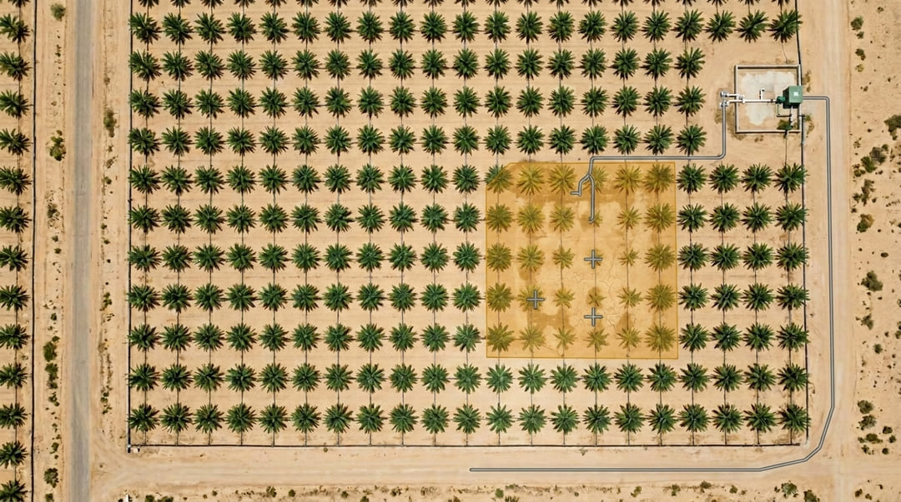

مجموعة السراني × شركة أوريل
فارم مارشال
من الملاحظة إلى الدليل.
مقترح تجربة تشغيلية خاضعة للإشراف في المملكة العربية السعودية.
وزارة البيئة والمياه والزراعة · وزارة الداخلية · وزارة الدفاع
ضع النسخة النهائية في assets/video/concept-film.mp4.
وحتى ذلك الحين تعرض هذه الشريحة لوحة العنوان.
المشكلة الحقيقية
هذه ليست مشكلة زراعية.
إنها فجوة معلومات.
كلفة هذه الفجوة
ستة إخفاقات، وسبب واحد
اكتشاف متأخر
المرض ينتشر قبل أن يراه أحد.
مياه غير منسوبة
الاستهلاك معروف إجمالاً، لا بحسب كل منطقة.
عمل غير موثّق
تُبلَّغ المهمة منجزة، ولا شيء يثبت ذلك.
ساعات تُستهلك في التنقل
وقت الفحص يذهب إلى الطريق لا إلى الحكم الفني.
خبرة موزعة على مساحات شاسعة
مهندس زراعي واحد، وآلاف الهكتارات.
لا سجل للموسم
لا يمكن إثبات الجودة بعد انقضاء الموسم.
حجم الخسارة يختلف باختلاف المحصول والمنطقة والآفة والموسم. أما ما لا خلاف عليه فهو أن تأخر الاكتشاف يرفع كلفة التدخل وتعقيده معاً.
ما هو فارم مارشال
سلسلة دليل واحدة
- سياق من الأقمار الاصطناعية
- فحص جوي مصرّح به
- حساسات أرضية ومحابس
- تقارير المشغّلين الميدانيين
- كل موسم سابق
بالموقع والزمن
مُعرَّف بالاسم
بموعد نهائي
الإنجاز
والنتيجة الموثّقة تصبح خط الأساس للموسم القادم.
مصارحة بشأن الأدوات
ثلاث طبقات، وثلاث وظائف مختلفة
| الطبقة | ما تؤديه | ما لا تستطيعه |
|---|---|---|
| الأقمار الاصطناعية | سياق إقليمي ورصد التغيّر | تمييز نخلة بعينها |
| الطائرات المسيّرة | تفصيل على مستوى المزرعة عند الطلب | القياس المستمر |
| الحساسات الأرضية | قياس مستمر للمياه والتربة والكهرباء | رؤية الحقل كاملاً |
| الخبير المؤهل | التشخيص والمسؤولية والاعتماد النهائي | الحضور في كل مكان في آن واحد |
عرض حي · ١ من ٣
فتح حالة
- منطقة موسومة داخل حيازة مُخرَّطة
- إحداثيات وزمن وارتفاع
- معرّف الرحلة مرتبط بالدليل

عرض حي · ٢ من ٣
خبير معروف بالاسم يتحمل المسؤولية
- التحقق من الهوية والشهادات قبل أي إسناد
- مطابقة التخصص المحصولي والإقليمي مع الحالة
- إفصاح مسجّل عن تعارض المصالح
عرض حي · ٣ من ٣
إغلاق بالدليل، لا بمكالمة هاتفية


لوزارة البيئة والمياه والزراعة
مياه يمكن حسابها.
وتدخّل قبل الانتشار.
| ما تحصل عليه الوزارة | الآلية |
|---|---|
| وضوح استهلاك المياه لكل منطقة وكل موسم | نقاط قياس للري، وقياس عن بُعد للمحابس، واكتشاف جوي للشذوذ |
| تدخّل أبكر في صحة النبات | فحص متكرر بمسارات ثابتة، ومقارنة بالتاريخ المسجل |
| قاعدة بيانات موحدة وقابلة للمقارنة | بروتوكول فحص واحد في كل مزرعة مشاركة |
| تحقق من تقدّم إعادة تأهيل الأراضي | دليل مؤرَّخ ومحدَّد الموقع مقابل الحدود المخططة |
| وصول الإرشاد الزراعي إلى الحيازات النائية | شبكة خبراء موثّقين، دون حاجة إلى سفر |
لوزارة الداخلية
كل رحلة مسجّلة.
وكل طيّار معروف.
وكل مسار محفوظ.
| الضابط | كيف يُفرض |
|---|---|
| طائرات مسجّلة | لا يمكن إسناد مهمة إلى طائرة غير مسجّلة |
| طيّارون معتمدون ومعروفون | سجل المشغّل مرتبط بكل مهمة؛ ولا وجود لرحلة مجهولة |
| حدود جغرافية مقيّدة | لا يمكن توليد مهمة خارج النطاق المصرّح به |
| تصريح لكل رحلة | غرض ونافذة زمنية وجهة معتمِدة — لا تصريح مفتوح |
| سجلات طيران كاملة | الإقلاع والهبوط والمسار والحمولة محفوظة للجهة المختصة |
| وصول منضبط للصور | كل اطّلاع أو تصدير منسوب إلى حساب معروف |
لوزارة الدفاع
بيانات سيادية.
وقدرة قابلة للتوطين.
إقامة البيانات
الصور وبيانات القياس تُخزَّن داخل المملكة. ولا تغادر صور التضاريس الولاية السعودية.
لا قناة قياس أجنبية
بيانات الطيران والحمولة لا تمر عبر سحابة مُصنّع أجنبي. وهذا يقيّد اختيار العتاد.
مسار التوطين
المرحلة الأولى تستخدم منصات متاحة. والثانية تحدد خارطة محتوى محلي للطائرة والحمولة.
كادر وطني للتشغيل
طيّارون سعوديون معتمدون، وصيانة وتخطيط مهام كقاعدة مهارات محلية.
انضباط المجال الجوي
تنفيذ المهام المدنية الروتينية بشكل صحيح يبني الثقافة الإجرائية التي تهم وقت الضغط.
الاستخدام المزدوج، بوضوح
المراقبة واسعة النطاق تشترك في أدواتها مع الإدراك واسع النطاق. نطرحها بأنفسنا بدل أن تكتشفوها.
الحوكمة
من يتحكم بماذا
| الطرف | يرى | لا يرى |
|---|---|---|
| مالك المزرعة | كل ما يخص حيازته | أي حيازة أخرى |
| الخبير | الحالة المسندة إليه فقط | هوية الحيازة خارج نطاق الحالة |
| الطيار عن بُعد | نطاق المهمة المصرّح به فقط | محتوى الحالة أو نتائج الخبير |
| الجهة المختصة | سجلات الطيران، وبيانات المزرعة وفق أساس نظامي محدد | أي شيء دون أساس مسجّل |
| مشغّل المنصة | بيانات التدقيق | لا شيء بصمت — كل اطّلاع مسجّل |
مدد احتفاظ محددة · سجل تدقيق غير قابل للتعديل · الذكاء الاصطناعي لا يحل محل قرار الخبير المسؤول — بل يرتّب أولوية ما يُنظر فيه أولاً.
الامتثال
سلسلة تصريح الطيران
المهمة
ومناطق الحظر
الطائرة
الطيار
الجهة المختصة
ضمن النطاق
السجلات
الوصول
ولا توجد في هذه السلسلة خطوة يستطيع مالك مزرعة تخطّيها بمكالمة هاتفية.
نطاق الطلب
ما لا نطلبه
- لا نطلب تصريح طيران وطنياً غير مقيّد
- ولا استثناءً من أي نظام قائم
- ولا عقداً وطنياً حصرياً
- ولا وصولاً إلى أي بيانات خارج المزارع المشاركة
- بل تجربة واحدة خاضعة للإشراف، في مواقع محددة وبطائرات محددة، تُقاس بمؤشرات تعتمدونها أنتم
افتراضات تخطيطية — وليست نتائج عملاء
نموذج اقتصادي لألف هكتار
| السيناريو | القيمة الإجمالية السنوية | كلفة الخدمة | العائد إلى الكلفة |
|---|---|---|---|
| متحفظ | ٨١٠٬٠٠٠ ريال | ٦٠٠٬٠٠٠ ريال | ١٫٣٥× |
| متوقع | ١٬٦٨٠٬٠٠٠ ريال | ٦٠٠٬٠٠٠ ريال | ٢٫٨٠× |
| قوي | ٢٬٥٨٠٬٠٠٠ ريال | ٦٠٠٬٠٠٠ ريال | ٤٫٣٠× |
افتراضات تخطيطية لحيازة تمثيلية، وليست نتائج مقيسة. وحدّنا التجاري الداخلي هو نسبة عائد إلى كلفة موثّقة لا تقل عن ضعفين.
التوطين
ما الذي يبنيه هذا داخل المملكة
طيّارون معتمدون
تدريب وترخيص وتوظيف في كل منطقة تشغيلية.
مشغّلون ميدانيون
التقاط الدليل والتحقق الأرضي والتعامل مع المعدات.
مراجعون زراعيون
مختصون سعوديون يراجعون حالات سعودية ويبنون سجلاً وطنياً للحالات.
محللو صور
وظائف بيانات ووسم وضبط جودة لم تكن موجودة محلياً.
الصيانة
صيانة الطائرات والحمولات داخل المملكة بدل شحنها للخارج.
خارطة المحتوى المحلي
محددة بالمراحل، يُقدَّم عنها تقرير، وقابلة لمراجعة الجهة المختصة.
تُدرَج أعداد الوظائف بعد تثبيت نطاق التجربة. ولا تُعرض إلا الأرقام القابلة للدفاع.
الطلب
تجربة واحدة خاضعة للإشراف
| النطاق | ن مزرعة / س هكتار في [المنطقة المحددة]، لموسم ري واحد |
| الطائرات | ن طائرة مسجّلة، محددة بالنوع والرقم التسلسلي |
| المشغّلون | ن طيّار معتمد، بالأسماء، ومصرّح لهم أمنياً |
| التنظيمي | تصريح المهام ضمن الإطار القائم، ويُؤكَّد المسار الدقيق مع فرقكم |
| الاستضافة | بيئة معتمدة داخل المملكة، محددة بالاسم |
| مؤشرات الأداء | وضوح استهلاك المياه · زمن الفحص لكل هكتار · زمن الاكتشاف حتى الإجراء · نسبة الإغلاق الموثّق · انعدام حوادث المجال الجوي |
| التقارير | شهرياً للجنة مشتركة، ومراجعة مستقلة من مهندس زراعي عند الختام |
| التمويل | [المبلغ]، بصيغة [منحة / تمويل مشترك / مناظرة لمساهمة الشريك] |
| الخروج | لأي طرف إنهاؤها في أي وقت، وتبقى كل البيانات والسجلات لدى الجهة المختصة |
مزرعة واحدة تحت السيطرة.
وقرار واحد مسنود بدليل.
ونموذج واحد قابل للتوسّع.
فارم مارشال · مجموعة السراني × شركة أوريل
غير معروضة
الملاحق
تنقّل للأسفل، أو اضغط Esc لعرض كل الشرائح.
أ١
سجل التحقق
يُبنى مباشرة من config/presentation.config.js. وأي بند
موسوم بأنه يحجب العرض يجب حلّه أو حذفه قبل تقديم هذا العرض.
أ٢
تأهيل الخبراء
- التحقق من الهوية قبل إسناد أي حالة
- حفظ سجلات الشهادات والمؤهلات
- مطابقة التخصص المحصولي والإقليمي لكل حالة
- إفصاح مسجّل وقابل للمراجعة عن تعارض المصالح
- مراجعة الأقران: نتائج المبتدئين يراجعها مختصون أقدم
- تقييم من المنصة ومن العميل، ظاهر في قرار الإسناد
أ٣
ما يفعله الذكاء الاصطناعي وما لا يفعله
يفعل
- ترتيب المناطق بحسب انحرافها عن تاريخ المزرعة نفسها
- وسم الحالات المرشحة لانتباه الإنسان
- التحسّن مع كل فحص موثّق
لا يفعل
- لا يصدر تشخيصاً
- ولا يعتمد علاجاً
- ولا يغلق حالة
- ولا يتحمل مسؤولية نظامية أو تجارية
أ٤
الحرارة والغبار والملوحة
العتاد المؤهل لظروف أوروبية أو مصرية يفشل في الخليج. وهذا بند تكلفة، لا تفصيل ثانوي.
- حاويات حساسات محمية بتصنيف مقاومة دخول وحمل حراري
- حماية الكاميرات من الغبار الكاشط
- استشعار بالحث الكهرومغناطيسي حيث تتآكل الحساسات التماسية
- فترات صيانة محددة بحسب البيئة لا بحسب نشرة المصنّع
العتاد الملائم لظروف الخليج أعلى كلفة من نظيره الأوروبي. وتسعير الخدمة يعكس ذلك، ويبقى أرخص من العطل الذي يمنعه.
أ٥
لماذا لا شركة طائرات مسيّرة قائمة؟
| الجهة | موقعها |
|---|---|
| Terra Drone Arabia | خدمات طائرات مسيّرة وجيومكانية، بعرض زراعي صريح. الرياض، تأسست ٢٠٢٣. |
| FalconViz | من كاوست، بيانات ورقمنة عبر المسيّرات، والزراعة الدقيقة ضمن قطاعاتها. |
| KOKBA، NineTenths، Zain Drone | معدات وتكامل وقدرة تشغيل المسيّرات كخدمة. |
| فارم مارشال | طبقة المساءلة فوقهم: سلسلة الدليل ومراجعة الخبير والإغلاق الموثّق. هم شركاء تنفيذ لا بدائل. |
أ٦
الاحتفاظ بالبيانات وحذفها والوصول النظامي
- صور المزارع وبيانات القياس تُخزَّن في بيئة معتمدة داخل المملكة
- مدد احتفاظ محددة لكل صنف بيانات قبل بدء التجربة
- الحذف عند الطلب، مع مراعاة مدد الاحتفاظ النظامية المتفق عليها
- وصول الجهة المختصة وفق أساس نظامي محدد، ومسجّل كأي وصول آخر
- سجل تدقيق غير قابل للتعديل يشمل كل اطّلاع وتصدير وتعديل
أ٧
إجراءات الحوادث والطوارئ
- إجراء انقطاع الاتصال: سلوك عودة محدد ونمط تحليق انتظاري
- الهبوط الاضطراري: مواقع محددة مسبقاً داخل كل نطاق مصرّح به
- تقرير حادث إلزامي للجهة المختصة خلال نافذة زمنية متفق عليها
- إيقاف عمليات الطيران لحين المراجعة بعد أي حادث
- حفظ سجلات صيانة الطائرات وإتاحتها للتفتيش
تُوثَّق قبل أول رحلة، لا بعد أول حادث.
أ٨
خارطة المراحل
تجربة خاضعة للإشراف
موسم واحد
توسّع إقليمي
بمؤشرات مقيسة
بروتوكول وطني
وخارطة محتوى محلي
كل مرحلة مشروطة بالنتيجة المقيسة للمرحلة السابقة، وتُراجَع مشتركاً. والتوسّع يُكتسب ولا يُجدوَل.
أ٩
النموذج الاقتصادي — الافتراضات مكشوفة
| مصدر العائد | متحفظ | متوقع | قوي |
|---|---|---|---|
| وفر الفحص والتنقل | ١٨٠٬٠٠٠ | ٢٧٠٬٠٠٠ | ٣٦٠٬٠٠٠ |
| وفر العلاج والمدخلات | ٩٠٬٠٠٠ | ١٥٠٬٠٠٠ | ٢٤٠٬٠٠٠ |
| وفر المياه والضخ | ١٢٠٬٠٠٠ | ٢٤٠٬٠٠٠ | ٣٦٠٬٠٠٠ |
| إيراد محصولي محمي | ٣٦٠٬٠٠٠ | ٩٠٠٬٠٠٠ | ١٬٤٤٠٬٠٠٠ |
| توثيق العمل الميداني | ٦٠٬٠٠٠ | ١٢٠٬٠٠٠ | ١٨٠٬٠٠٠ |
| الإجمالي (ريال/سنة) | ٨١٠٬٠٠٠ | ١٬٦٨٠٬٠٠٠ | ٢٬٥٨٠٬٠٠٠ |
الأساس السنوي المفترض: ١٨٫٠ مليون ريال إيراد محصولي، و٣٫٠ مليون مدخلات، و٢٫٤ مليون مياه وضخ، و٠٫٦ مليون فحص وتقارير، و٦٫٠ مليون أعمال ميدانية متعاقد عليها. العوائد متداخلة ولا يصح جمعها على خط أساس مختلف.
أ١٠
من نحن، ومن لسنا
«لسنا خبراء زراعيين، ولن ندّعي ذلك أبداً. نحن نبني النظام الذي يجعل المهندسين الزراعيين المؤهلين أسرع وأدقّ وأكثر قابلية للمساءلة. الزراعة تبقى للمهندسين الزراعيين. وسلسلة الدليل هي عملنا.»